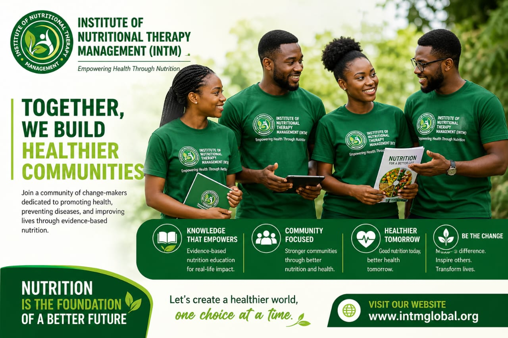
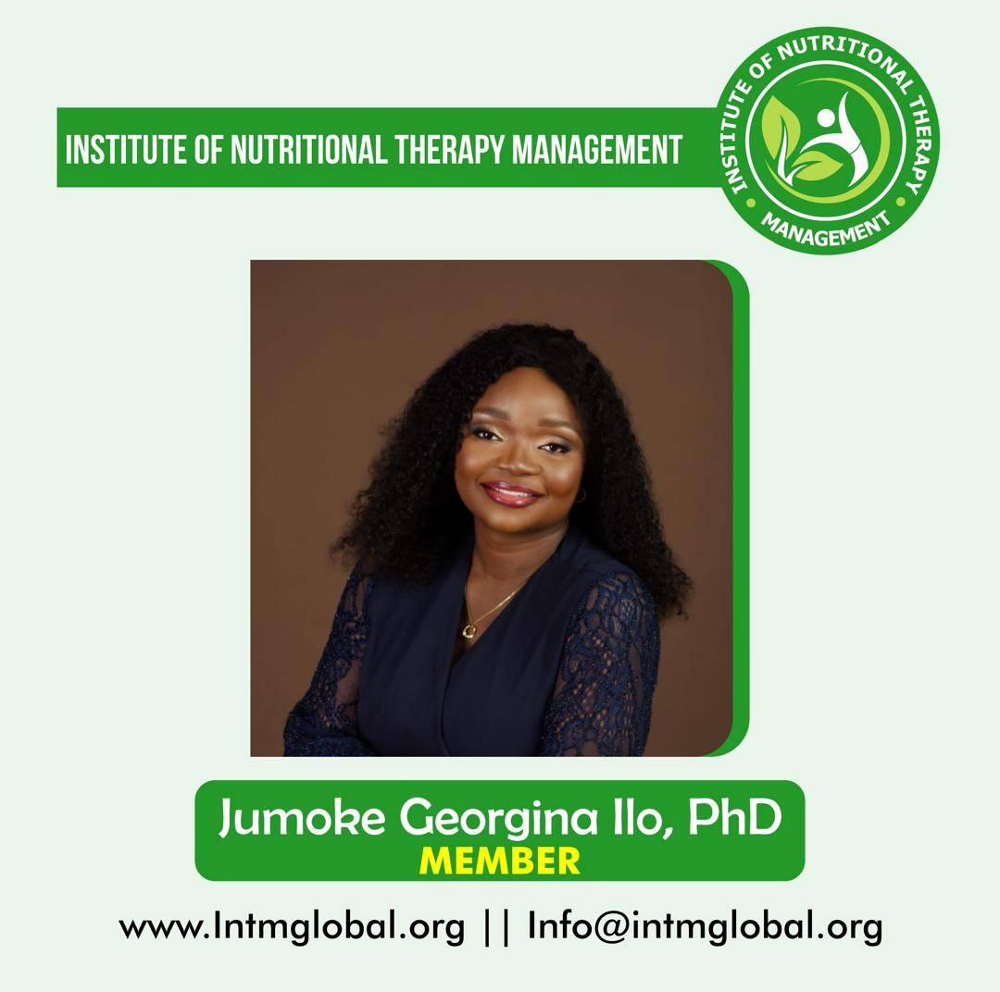
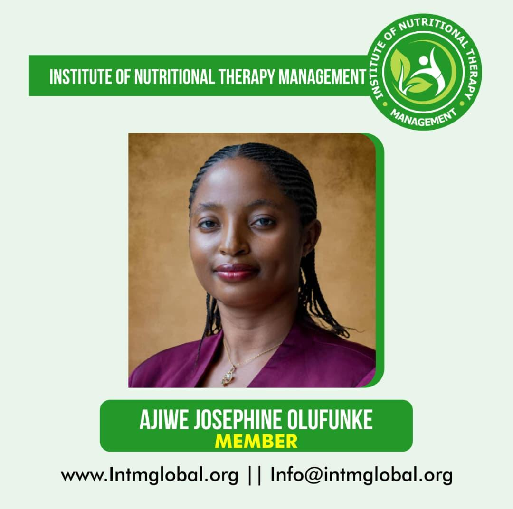
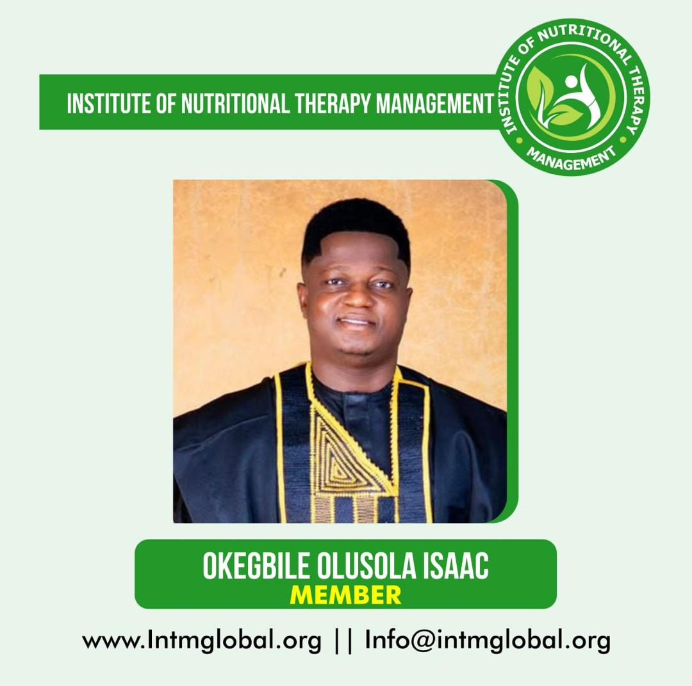

Nourish Knowledge. Transform Lives.
Advancing nutritional science and professional clinical practice standards across Africa.

Bridging Nutrition Science with Clinical Practice
INTM provides nutritionists, dietitians, and healthcare practitioners with accredited training, published research protocols, and a regulated professional credential registry.
Education
Accredited, evidence-based programs tailored to all career stages.
Research
Pioneering studies in therapeutic nutrition and food systems.
Community
A vibrant professional network supporting peer growth and impact.
Impact
Policy advocacy and community nutrition programmes at scale.
Professional Members
Recognised professionals committed to advancing nutritional therapy and food safety standards globally.

Professional Member
Fellow (FINTM)

Professional Member
Full Member (MINTM)

Professional Member
Associate Member
Programs in Nutritional Therapy
A preview of our curriculum. Explore the full course catalogue for complete details and delivery formats.
Diploma in Nutritional Therapy - Level 1
Foundation DiplomaBuild strong foundations in nutrition science, physiology, assessment, and professional practice.
Diploma in Nutritional Therapy - Level 2
Intermediate DiplomaAdvance into clinical and therapeutic application, protocols, assessments, and case management.
Professional Diploma in Nutrition
Professional DiplomaA career-focused programme combining clinical application, public health nutrition, and professional practice.
Professional Membership
Membership confers regulated post-nominals, clinical practice guidelines, and admission to our accredited practitioner registry.
Associate Member
Students & newly qualified practitioners
- Access to INTM digital library
- Monthly learning resources
- Discounted course fees
Full Member
Qualified nutritionists & dietitians
- Professional recognition
- CPD support & tracking
- Member-only benefits
Fellow
Senior practitioners & academics
- Leadership opportunities
- Research support
- Speaking & advisory roles
Institutional Collaborations
INTM builds strategic partnerships with universities, healthcare systems, government bodies, and industry leaders to expand the reach of nutritional therapy and translate science into policy.
Academic Partnerships
Joint research programmes, dual-award degrees, and curriculum development with leading universities.
Healthcare Institutions
Clinical placement agreements, professional development, and shared patient-care protocols.
Upcoming Seminars and Workshops
All sessions are virtual in 2026 and run from 9:00 AM to 12:00 PM (WAT).
Research and Public Health Initiatives
Explore our portfolio of impactful nutrition projects spanning community intervention, clinical research, food systems, and public health policy.
Our Research PortfolioActive Projects
Research Funding
Lives Reached
Publications
NutriScreen Nigeria
A nationwide malnutrition screening programme deployed across 200 primary healthcare centres in six states.
Maternal Nutrition & Birth Outcomes Study
A longitudinal clinical trial examining targeted supplementation on maternal anaemia and birth outcomes.
Food Systems & Urban Nutrition Atlas
Mapping food access and nutritional vulnerability across Nigerian urban centres to inform policy.